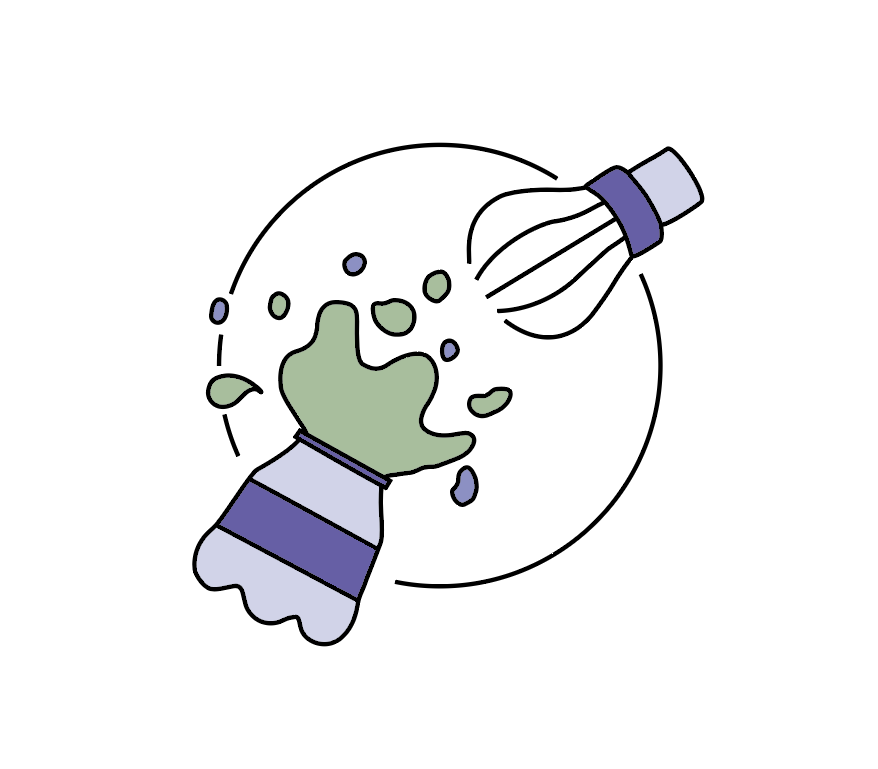
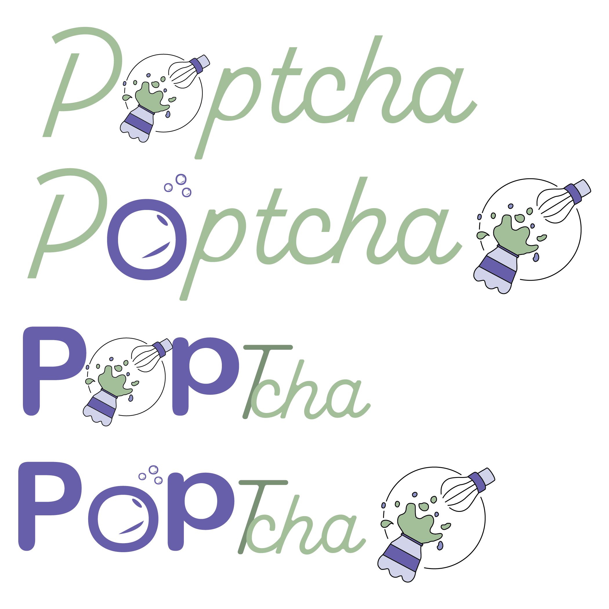
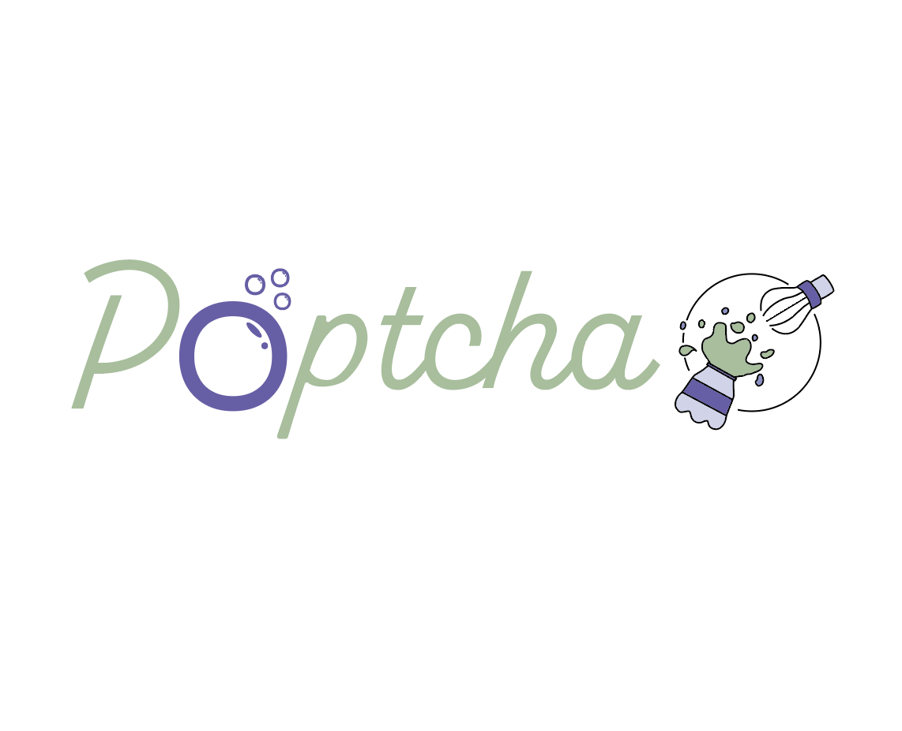

Drafting the Logo
Intitial Logo Art Sketches
For the logo art, I tried sketcing various iterations that represented the brand's name, and ideation of the fun exploding flavors of their matcha products. It was a long run of trial and error, as I bounced around from putting too much and too little detail.
Final Logo Art Sketch
Eventually, I was able to create a sketch that I thought had a good balance of fun, while still symbolizing matcha. The logo represents a bottle with matcha exploding out of it, with the top drawn as a matcha whisk, sent flying. It signifies a different way of conveying that the matcha is exploding in flavor.

Main Logo draft
To incorporate the logo art with the chosen typeface, I created different iterations of what the main logo should look like. I also experimented with two different typefaces within the logo.

Final Logo Draft
With the final logo design, I adjusted the design of the 'o' in poptcha from my second iteration, to have the subtle appearance of an exclamation mark. The final design allows the logo name and design to be able to stand out on their own, while still looking cohesive together. The design overall has eye catching elements and colors that easily stand out, and portray the brand's ideation of fun flavored matcha products. The logo is also easily adaptable to represent different flavors of the matcha products by changing the secondary colors.
